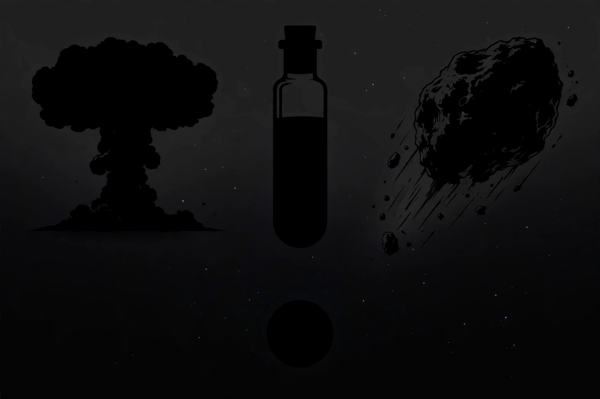

From Wikipedia, the free encyclopedia
| Existential risk | |
|---|---|
| Term systematised by | Nick Bostrom (2002) |
| Definition | A risk threatening the premature extinction of Earth-originating intelligent life or the permanent destruction of its long-term potential |
| Major sources studied | Nuclear war, engineered pandemics, unaligned artificial intelligence, extreme climate change, asteroid impacts, supervolcanoes |
| Key texts | Bostrom (2002); Ord, The Precipice (2020) |

An existential risk (or x-risk) is a risk that threatens the premature extinction of humanity, or the permanent and drastic destruction of humanity's long-term potential. The term was systematised by the philosopher Nick Bostrom in 2002 and developed by researchers at Oxford and elsewhere into a field of study spanning philosophy, forecasting, science and policy. Its defining move is the stakes: because the future could contain an enormous amount of value across millions of generations, even small reductions in existential risk are argued to matter enormously — the core of longtermism.
Bostrom's taxonomy distinguishes "bangs" (sudden extinction or collapse), "crunches" (permanent loss of the conditions for civilisation), "shrieks" (a permanently defective civilisation) and "whimpers" (gradual loss of value or potential). Risks discussed in the literature include nuclear war and nuclear winter; natural and — much more concerning to most researchers — engineered pandemics; misaligned artificial superintelligence; extreme climate change (generally treated as a risk factor and potential contributor rather than a direct extinction mechanism); and natural risks such as asteroid and comet impacts and supervolcanic eruptions, which are well-studied and generally assessed as smaller than the anthropogenic ones. Toby Ord's The Precipice (2020) gives the field's standard popular assessment, estimating roughly a one-in-six chance of existential catastrophe in the coming century — an explicitly personal judgement offered to be argued with.
Critics dispute the probabilities (unknowable, they argue), the moral framing (present suffering should not be discounted for speculative futures), and the community's judgements about which risks dominate — particularly its emphasis on AI. Supporters reply that the field's method is ordinary risk analysis applied at the largest scale, and that its policy fruits — biosecurity, asteroid surveys, AI governance — are defensible on many grounds. Governments have begun to adopt the vocabulary: national risk registers, the UK's AI Safety Institute (2023), and international statements on catastrophic risk all mark the idea's migration from philosophy seminar to policy.
Longtermism · Nick Bostrom · Toby Ord · Effective altruism · Philosophy